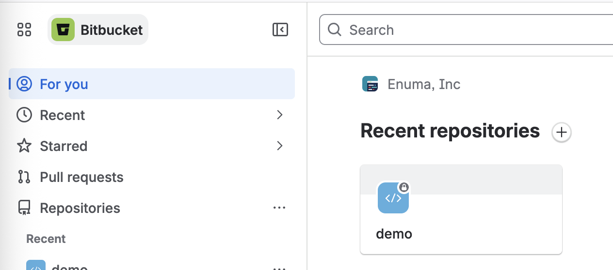
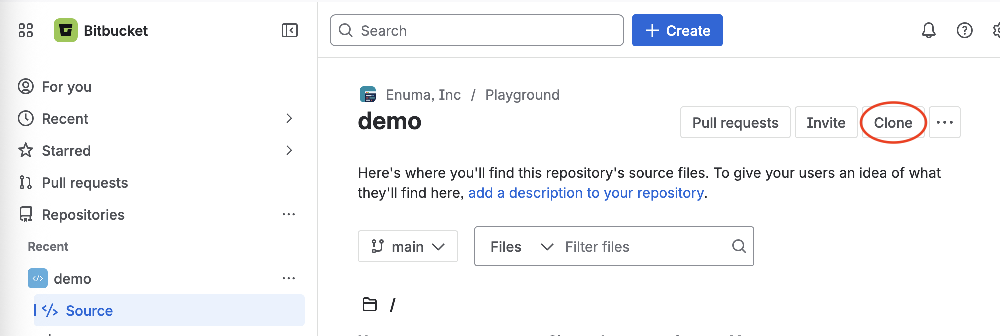

🚀 시작하기
Bitbucket 계정을 만들고, 팀의 작업 공간과 첫 저장소를 둘러봅니다.
1. 계정 만들기
bitbucket.org에 접속해 에누마 Google 계정으로 가입합니다. 회사 팀에 합류하는 경우, 팀에서 보낸 초대 메일의 링크로 가입하면 자동으로 팀에 연결됩니다.
2. 작업 공간(Workspace) 이해하기
워크스페이스는 팀의 모든 코드가 모이는 가장 큰 단위예요. 로그인하면 보이는 For you 화면에서 내가 속한 워크스페이스와 최근 저장소를 볼 수 있습니다.

💡 위 화면의 Enuma, Inc가 워크스페이스, demo가 그 안의 저장소예요.
3. 저장소(Repository) 둘러보기
저장소를 클릭하면 그 안의 Source(소스 파일), 브랜치, Pull requests 등을 볼 수 있어요. 오른쪽 위 Clone 버튼은 다음 페이지에서 사용합니다.
